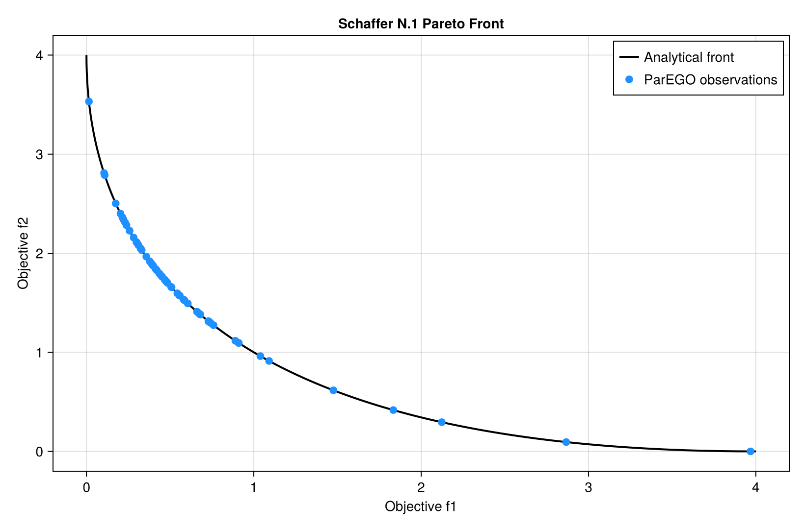

Tutorial
1. Define a vector-valued objective
The objective accepts one parameter vector and returns a fixed-length vector. This example minimizes two competing quadratic objectives:
using AsyncMultiObjectiveBayesOpt
objective(x) = [x[1]^2, (x[1] - 2.0)^2]
bounds = reshape([-5.0, 5.0], 1, 2)The first objective is minimized at x=0, while the second is minimized at x=2. Every x in [0, 2] is Pareto-optimal.
2. Run the optimizer
result = async_mobo(
objective,
bounds;
n_objectives=2,
objective_senses=[:min, :min],
max_evals=80,
n_initial=12,
candidate_pool=5_000,
seed=2026,
)This command runs serially when launched with one Julia process. The same code runs asynchronously when launched under MPI.

3. Inspect the Pareto archive
result.pareto_X
result.pareto_Y
result.pareto_indicesColumns correspond across these arrays. pareto_X[:, j] produced the objective vector pareto_Y[:, j].
There is no unique best point on a Pareto front. For convenience, the result also contains:
result.compromise_x
result.compromise_yThis is the observed Pareto point nearest the normalized ideal point. It is a neutral inspection choice, not a replacement for domain-specific preferences.
4. Mixed minimization and maximization
Use one direction per objective:
result = async_mobo(
cost_and_quality,
bounds;
n_objectives=2,
objective_senses=[:min, :max],
max_evals=100,
)The returned objective values retain their original signs and units.
5. Choose an evaluation budget
Useful starting points for expensive deterministic objectives are:
| Parameter dimensions | Initial design | Total budget | Candidate pool |
|---|---|---|---|
| 1-3 | 12-20 | 80-150 | 5,000-8,000 |
| 4-8 | 20-40 | 150-400 | 8,000-20,000 |
| 9-15 | 40-80 | 300-1,000 | 20,000-50,000 |
These are starting points, not guarantees. More objectives, noise, disconnected fronts, and broad parameter bounds require larger budgets.
6. Connect an expensive simulation
Run the expensive simulation once and derive every objective from the same output:
function objective(parameters)
simulation = run_simulation(parameters)
return [
fit_error_dataset_a(simulation),
fit_error_dataset_b(simulation),
fit_error_dataset_c(simulation),
]
endIf the simulation throws or any returned objective is non-finite, that entire evaluation is recorded as a failure. The optimizer continues with the remaining finite evaluations.
7. Save results
Only rank zero receives the result. A dependency-free CSV writer can use DelimitedFiles:
using DelimitedFiles
using MPI
if MPI.Comm_rank(MPI.COMM_WORLD) == 0
writedlm("pareto_parameters.csv", permutedims(result.pareto_X), ',')
writedlm("pareto_objectives.csv", permutedims(result.pareto_Y), ',')
writedlm("all_parameters.csv", permutedims(result.X_history), ',')
writedlm("all_objectives.csv", permutedims(result.Y_history), ',')
endFor long cluster jobs, save the completed result immediately after async_mobo returns.